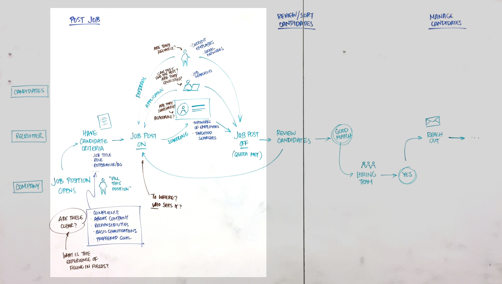
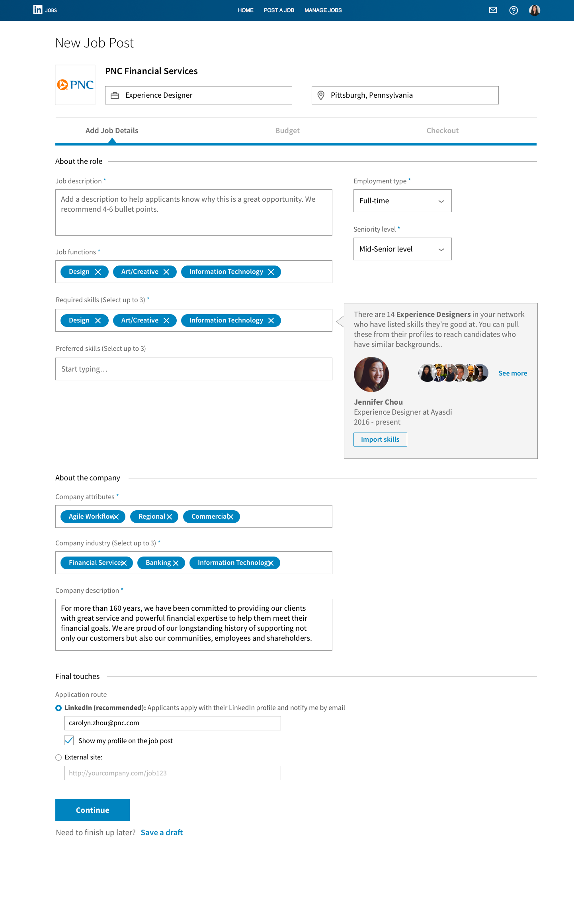
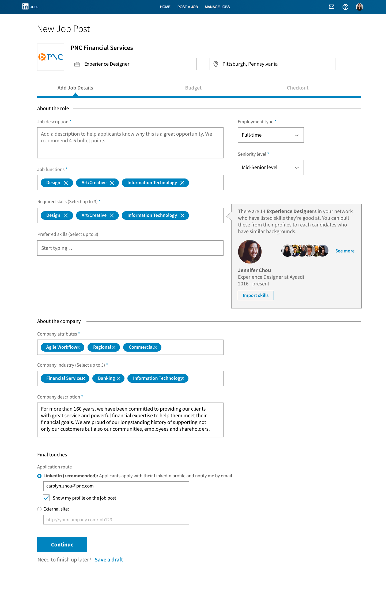

LinkedIn Design Challenge
Challenge
Design an improved job posting experience for recruiters or hiring managers that helps them attract and recruit relevant candidates for the position. Time frame one week.
Outcome
A posting process that allows recruiters to reach candidates through the power of their trusted social networks. My full process documentation can be found here.
Skills Practiced
- User research
- User experience design
- Interaction design
Research
Understanding the Problem
To begin, I listed questions I had from the reading prompt:
- What do recruiters need to know to post a job?
- How do recruiters reach candidates who are relevant to the job posted?
- What do candidates want to see in a job post?
I conducted some preliminary research on job posting based on LinkedIn’s search filters and my own experience job searching. This helped me start thinking about information hierarchy in the posting process.
Recruiter Interviews
Talking to recruiters, I learned that job posting involves targeting the right people using the right criteria. Before posting, recruiters need a clear understanding of the job requirements, so that they can provide strong descriptions and accurate criteria. In some cases recruiters look to current employees’ networks to find people with similar backgrounds. These are more reliable ways to find relevant, high-quality candidates.
If recruiters often look to people they already know to find quality candidates, I wondered if there was a better way to communicate about the job opportunity with those people during the posting process.
Sample questions:
- How do you know what criteria is needed for a job?
- After posting a job, how much is receiving applications vs. actively reaching out?
- How do you know if a candidate is a good fit?
- Who do you find to be most responsive, and can you predict it?
Candidate Interviews
I decided to talk to candidates as well to find out what they looked for in a job post, and whether that could help the recruiter’s side to post more effectively.
Most job searchers have certain criteria in mind already, such as the job title or company name. They enjoy hearing from people like them, such as peers in the same field, to learn more about a job or company. I wondered if recruiters could show more of what candidates wanted to see.
Sample questions:
- Where do you look for jobs? Do you use LinkedIn?
- How do you determine if a job is a good fit for you?
- What would you like to know about a job before you apply to it?
- What is your general experience with recruiters?
As-Is Journey Map
From my research so far, I saw how jobs openings are posted, shared and tracked. Although my focus was on the job posting section, I sought to understand the fuller process as my designs in the posting part would still be informed by later steps.
Competitive Analysis
LinkedIn: I did some research on the recruiter’s side of LinkedIn, because I was not familiar with the interface. I looked at how recruiters create post jobs, manage and track candidates, and so on. Looking at existing job posts on LinkedIn, I also noticed that they are extremely text-heavy and cumbersome to read. One candidate I interviewed said she doesn't read job descriptions because most of them are generic.
Indeed: Indeed is the largest job board in the world, and its job posts are viewed by a huge pool of candidates. One thing I picked up about these job posts was that most of the fields are optional. This, in addition to the service being free for employers to use, made me question the quality of job postings. In comparison, LinkedIn marks many more required fields, making the search process easier for candidates, and maybe more difficult for recruiters up front but easier later when sorting through applicants.
Facebook Jobs: Facebook has an interesting method of targeting. Targeting people who “liked” certain pages reaches people with similar interests or backgrounds. The existence of Facebook Groups makes it easy to do something similar. Recruiters on Facebook can leverage social networks to reach distinct groups of people who will likely be interested in certain jobs. At least one candidate mentioned his social network as his primary resource for finding job opportunities.
Key Insights
- Recruiters need to know the business or field of the job they’re posting, so they can target candidates more effectively. These criteria are best known by the hiring manager, or recruiters might look to current employees as examples.
- Social networks and relationships are some of the most valuable resources to both recruiters and job seekers. For recruiters it’s great to get referrals from people they trust, and easier to base candidate searches on people they already know.
- Candidates look for key words rather than long job descriptions. Many find paragraphs of descriptions generic and hard to parse. On the other hand, key words are easy to input and search. Of course, they aren’t as comprehensive or descriptive.
Design Phase
Design Goals
From my research, I derived the main goals of my design:
- To use social networks to reach more concentrated pools of relevant, quality candidates.
- To help recruiters show information that candidates care about, for higher engagement with candidates who are a good match.
- To make criteria clear and easy to input into a job post.
Storyboard
The concept is, essentially, “I know Bob. I want to hire a Bob. Get this job in front of other Bobs.”
- Briefing by hiring manager
Chris is a recruiter at PNC. She gets briefed by her hiring manager about a job opening for an Experience Designer position, a new role in the company. - New job post composition
Chris pulls up a new job post composition. She fills in the job title and location, the highest levels of information. - Add job details: Fill in desired skills, company description, etc.
Some fields are pre-filled based on the job title, such as job functions and company details. Chris fills in Skills based on what designers in similar roles and industries (i.e. designers at banks) have listed for themselves. The company details are pre-filled. - Target candidates: Share post through connections to reach quality candidates
In this section, Chris can "target" certain networks. The database finds people in her own network who fit the job criteria, because they are likely to know others who have similar expertise, experiences and backgrounds. Chris wants them to see the post so they can send referrals her way. - Checkout: Set budget and place order
Finally, Chris sets her daily budget and places her order for the post. She is content knowing that her money is being spent as effectively as possible on candidate views.
Iterations & Feedback
I received feedback on different layouts and how they led people to follow and group information. I also got feedback to write clearer explanations and to break down certain steps to better focus the tasks. The following screencaps are iterations of the same page.
 

Final Screens
Walkthrough
Results
This solution passed LinkedIn's Design Challenge round.
Reflection
For this challenge, I made informed decisions based on online research and a small sample of users, but I was working off some assumptions. Given that my concept was emphasizing the value of social networks in job posting and recruiting, I would’ve liked to learn more about how well LinkedIn’s virtual networks reflect real-life social networks and interactions.
If I had more time, I would conduct usability tests with my prototype. I'd want to see how easily users can understand the concept. I'd also be interested to test some success measures, such as whether job posts take a shorter time to complete, or whether the candidates who respond to job posts feel “relevant” at a higher rate.